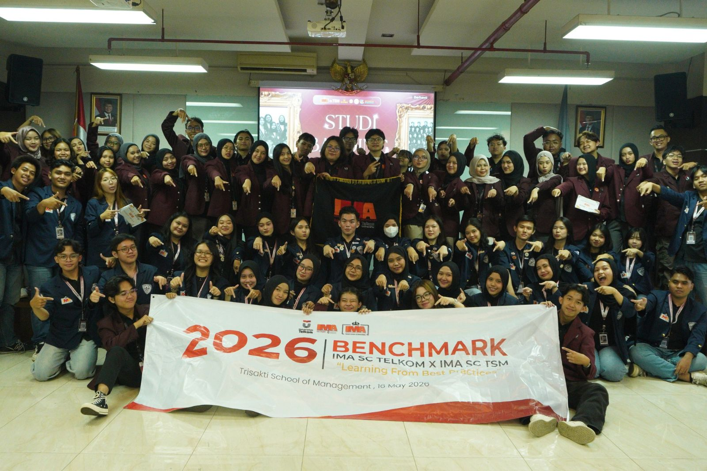

"Merangkai Relasi, Membangun Inspirasi"
IMA SC Telkom University — 2025/2026

“Ketika Sebuah Pertemuan Melahirkan Relasi dan Inspirasi Baru”
Tidak semua proses belajar harus selalu terjadi di dalam kelas. Kadang, insight terbaik justru datang dari sebuah perjalanan, obrolan sederhana, dan pertemuan dengan orang-orang baru yang membawa perspektif berbeda. Melalui semangat itu, IMA SC Telkom University berkesempatan untuk melaksanakan kegiatan benchmark bersama IMA SC Trisakti School of Management sebagai wadah untuk saling mengenal, bertukar pengalaman, dan belajar bersama antar organisasi.
Kegiatan benchmark ini menjadi salah satu momen yang tidak hanya menambah wawasan, tetapi juga memperluas relasi antar mahasiswa yang memiliki minat dan tujuan yang sama di bidang marketing communication. Sejak awal kedatangan, teman-teman dari IMA SC Trisakti School of Management menyambut dengan sangat hangat dan penuh antusias. Atmosfer yang dibangun terasa nyaman, santai, dan jauh dari kesan kaku, sehingga membuat seluruh peserta lebih mudah berbaur satu sama lain.
Keramahan yang diberikan juga membuat suasana selama acara terasa semakin hidup. Mulai dari sesi perkenalan, sharing session, hingga berbagai aktivitas interaktif lainnya berhasil menciptakan komunikasi dua arah yang seru dan menyenangkan. Tidak hanya sekedar bertemu sebagai dua organisasi berbeda, tetapi juga membangun kedekatan yang membuat hubungan antar anggota terasa lebih akrab.
Di balik suasana yang penuh tawa dan kehangatan, tentunya ada banyak pembelajaran yang berhasil didapatkan. IMA SC Trisakti School of Management membagikan berbagai pengalaman mengenai pengelolaan organisasi, cara menjaga solidaritas antar anggota, hingga strategi dalam menjalankan program kerja yang relevan dan impactful. Banyak hal baru yang kemudian menjadi inspirasi bagi IMA SC Telkom University untuk terus berkembang dan melakukan evaluasi ke arah yang lebih baik.
Melalui kegiatan ini, IMA SC Telkom University juga belajar bahwa setiap organisasi memiliki karakter, budaya, dan cara berkembangnya masing-masing. Perbedaan tersebut bukan menjadi penghalang, melainkan kesempatan untuk saling melengkapi dan saling bertukar sudut pandang. Dari situlah proses belajar yang sesungguhnya terbentuk, yaitu ketika setiap pengalaman bisa menjadi bahan refleksi untuk bertumbuh bersama.
Benchmark ini bukan hanya tentang membandingkan organisasi satu dengan yang lain, tetapi lebih dari itu, tentang bagaimana membangun koneksi, memperluas cara pandang, dan membuka peluang kolaborasi di masa depan. Momen sederhana seperti diskusi ringan, bertukar cerita, hingga tertawa bersama justru menjadi bagian yang paling berkesan selama kegiatan berlangsung.
Pada akhirnya, setiap pertemuan selalu meninggalkan cerita dan pelajaran baru. Benchmark antara IMA SC Telkom University dan IMA SC Trisakti School of Management menjadi bukti bahwa sebuah organisasi dapat berkembang bukan hanya dari internalnya saja, tetapi juga dari keberanian untuk belajar bersama organisasi lain. Semoga kegiatan ini menjadi awal dari hubungan baik dan kolaborasi positif yang terus berlanjut di kemudian hari.
Copywriter : Harnumsaktia